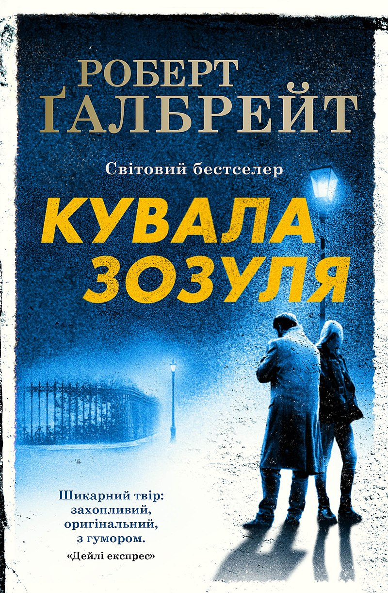
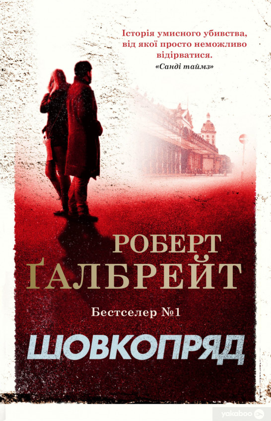
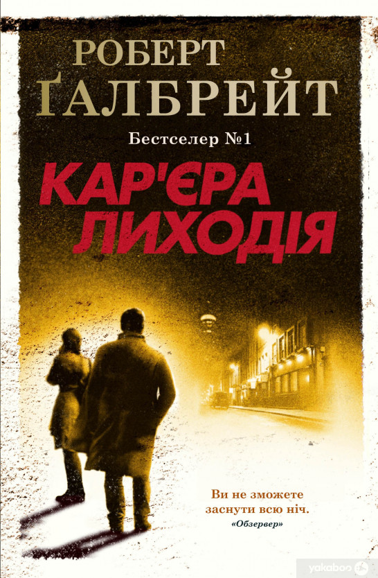
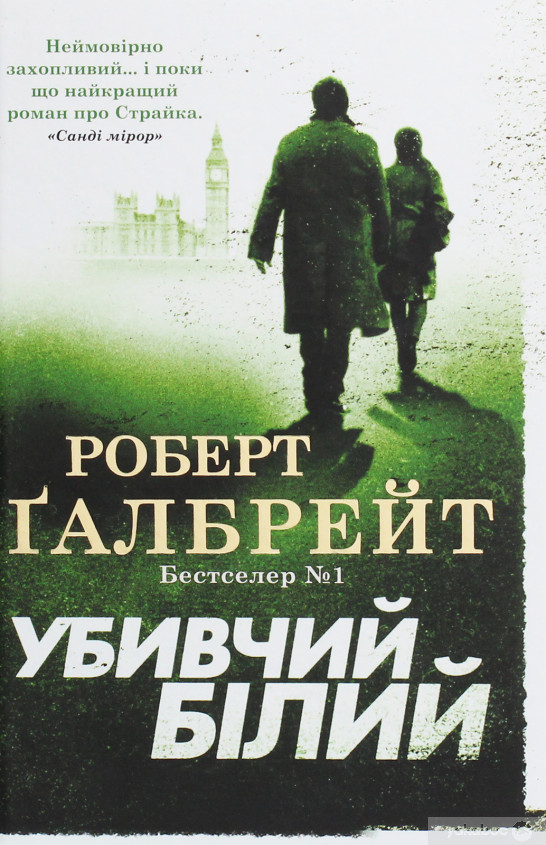
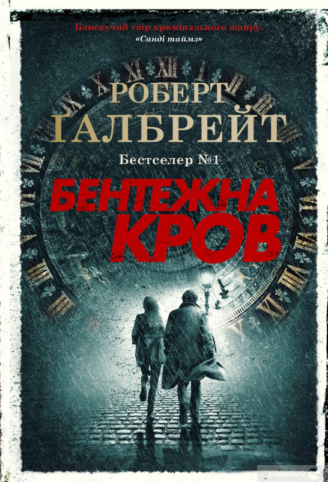

Серія «Корморан Страйк»
Серія детективно-фантастичних романів, написаних британською письменницею Джоан Роулінґ, надрукованих під псевдонімом Роберт Ґалбрейт. У творах йдеться про пригоди приватного детектива Корморана Страйка та його партнерки Робін Еллакотт. Наразі опубліковано п'ять романів із серії. Після третьої книги Роулінґ заявила, що має плани ще принаймні на десять.
Упродовж кількох років Роулінг часто говорила, що хоче написати детективний роман. 2007 року під час Единбурзького книжкового фестивалю шотландський письменник Йен Ренкін (англ. Ian Rankin) сказав журналу The Sunday Times, що його дружина Міранда бачила, як письменниця працювала над детективним романом у кав'ярні. Пізніше він відмовився від своїх слів, заявивши, що пожартував. У лютому 2012 року The Guardian помістив припущення, що наступною книгою Роулінг буде детективний роман.
Джоан Роулінг, бажаючи зберегти анонімність, надсилала рукопис книги видавцям анонімно, і принаймні одне видавництво — Orion Publishing — відповіло відмовою на публікацію. Директор видавництва Orion Publishing Кейт Міллз зізналася, що роман видався їй «добре написаним, але якимось тихим». Зрештою, книгу було випущено видавництвом «Sphere Books», імпринтом видавничого дому «Little, Brown and Company», який у 2012 році випустив попередню книгу Роулінг «Несподівана вакансія». За інформацією видавництва, Роберт Ґалбрейт працював на посаді слідчого спецрозслідувань Королівської військової поліції, а 2003 року звільнився і перейшов працювати до цивільної служби безпеки.

Перелік книг в серії
«Кувала зозуля»
До переліку книг«Кувала зозуля» (англ. The Cuckoo's Calling) — детективний роман, що вийшов у квітні 2013 року. Авторство Роулінг стало відомим 14 липня, через три місяці після виходу книги.
320 грн.
ПридбатиСюжет
У книзі йдеться про приватного детектива, ветерана війни в Афганістані, Корморана Страйка, який розслідує смерть супермоделі Лули Лендрі на прохання її зведеного брата Джона. Усі факти вказують на те, що Лула покінчила життя самогубством, однак Джон має сумніви.
«Шовкопряд»
До переліку книг«Шовкопряд» (англ. The Silkworm) — детективний роман, що вийшов у червні 2014 року.
270 грн.
ПридбатиСюжет
Корморан Страйк розслідує нову справу - зникнення письменника Оуена Квайна. Його дружина вважає - чоловік просто втік, щоб побути на самоті, й просить Страйка розшукати його і повернути додому. Але Страйк, почавши розслідування, розуміє, що зі зникненням Квайна не все так просто. Письменник щойно дописав сатиричний роман, у якому в непривабливому світлі виставив практично всіх своїх знайомих. Якщо такий твір опублікувати, він зруйнує багато життів, отож чимало людей хотіло б заткати Квайнові рота. Невже хтось таки на це наважився?...
«Кар'єра лиходія»
До переліку книг«Кар'єра лиходія» (англ. Career of Evil) — детективний роман, що вийшов у жовтні 2015 року.
280 грн.
ПридбатиСюжет
Робін отримує загадковий пакунок - і з жахом виявляє, що невідомий лиходій надіслав їй відрізану жіночу ногу. Її шеф, приватний детектив Корморан Страйк, не настільки вражений, але стривожений не менше за неї. В його минулому є четверо людей, які винуватять Страйка за свої біди і які здатні на такий моторошний злочин. Поліція зосереджує увагу на одному з них, але Страйк не впевнений, що це саме він, тож їм з Робін доводиться взяти справу у свої руки й поринути в темний і збочений світ трьох інших підозрюваних. Але страхітливі події не припиняються, а час невідворотно спливає...
«Убивчий білий»
До переліку книг«Убивчий білий» (англ. Lethal White) — детективний роман, що вийшов у вересні 2018 року.
350 грн.
ПридбатиСюжет
Під час одруження Робін Еллакотта з Меттью Канліффом Корморан Страйк захопив Шеклвелльского Різника, ввечері ця новина вже широко відома, за винятком Робін. Коли Страйк розповідає їй, що намагався зв’язатися з нею протягом тижня, вона розуміє, що Метью видалив повідомлення Страйка, що призводить до серйозної сварки між новим подружжям. Перед від’їздом Страйка Робін приймає його пропозицію працювати найманим партнером у детективному агентстві.
Через рік Страйк розширив своє детективне агентство до такої міри, що йому потрібно найняти більше слідчих. Цього разу через незапрошений візит Біллі Найта, молодого чоловіка із психічними захворюваннями, який стверджує, що був свідком вбивства дитини та поховання тіла в лісі кілька років тому, але не може надати жодних подробиць, перш ніж закінчиться, герої книги починають нове розслідування.
«Бентежна кров»
До переліку книг«Бентежна кров» (англ. Troubled Blood) — детективний роман, що вийшов у вересні 2020 року.
420 грн.
ПридбатиСюжет
Події в книзі «Бентежна кров» починається в серпні 2013 року і закінчується на 30-й день народження Робін 9 жовтня 2014 року. Під час відвідування своєї невиліковно хворої тітки Джоан в Корнволлі, до Страйка звертається жінка, яка хоче найняти фірму Страйка для розслідування зникнення її матері, Марго Бамборо, лікаря загальної практики в Лондоні, майже 40 років тому, 11 жовтня 1974 року.
Донька загиблої Анна та її дружина дають фірмі річний контракт на спробу відстежити інформацію, хоча, оскільки маленька фірма має ще три справи, що тривають, потрібно кілька місяців, щоб виявити свідків і слідчих (або їхніх дітей). У результаті своїх попередніх успіхів Страйк і Робін (досі є найманим партнером) наймають трьох слідчих за контрактом і офіс-менеджера.